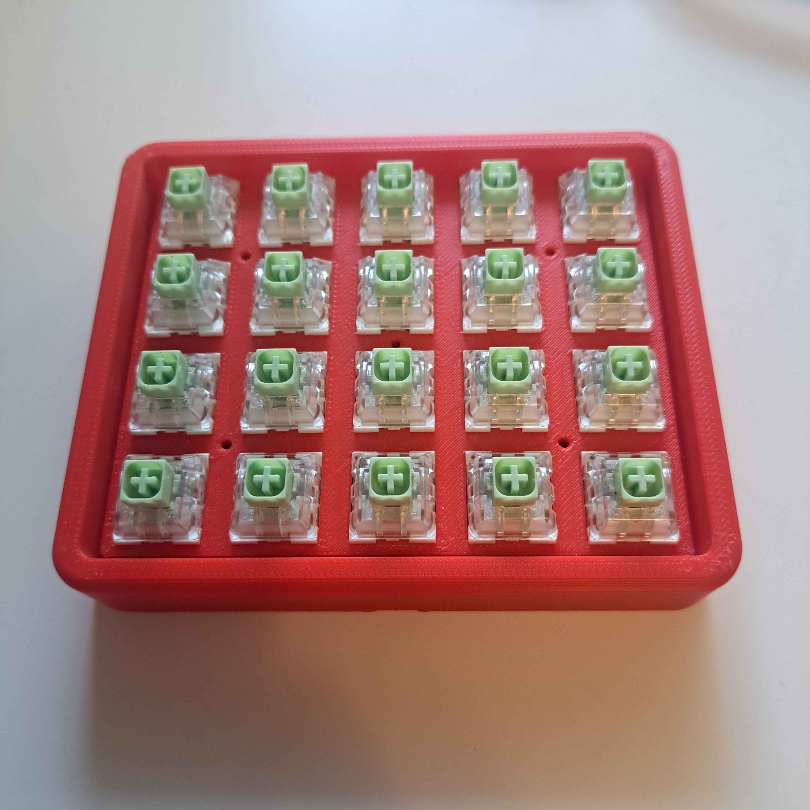
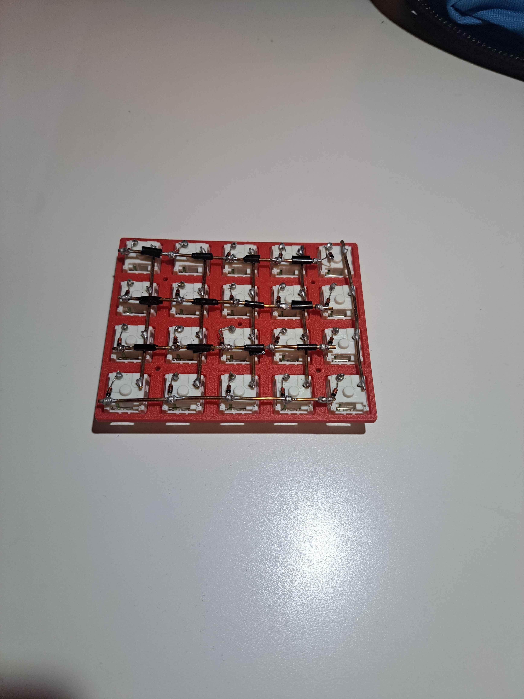

The macropad is my miniature keyboard project, developed in response to the numerous keybinds required by modded Minecraft. It is composed of a custom 3D printed case, jade switches, and an Arduino Pro Micro. The Ardunio runs custom QMK firmare, with the help of ScottyKeebs 5x4 firmware. Currently, it is in progress, with only the firmware flashing and the soldering to the Arduino left.

Completed macropad exterior

Completed macropad interior
One of the major things I learned was 3D printing. Primarly, splicing, pla types, support, and the basics of 3D printing.
Can you see any borders from here? What has borders given us. We're going to start over from scratch. Thats what V2 is for. There's only way buddy. You got to fight for what you believe in.